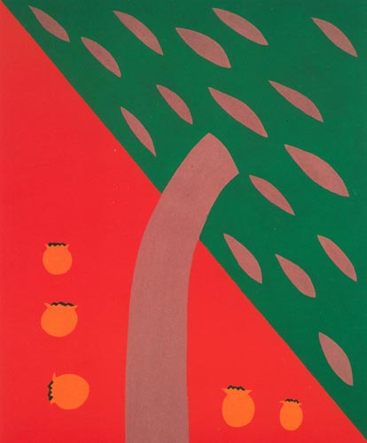

Details
Vernissage: 30. März 2001
Eröffnung: Mag. Christian Kvasnicka
Die Ausstellung war bis Ende Mai 2001 zu besichtigen.

Vernissage: 30. März 2001
Eröffnung: Mag. Christian Kvasnicka
Die Ausstellung war bis Ende Mai 2001 zu besichtigen.